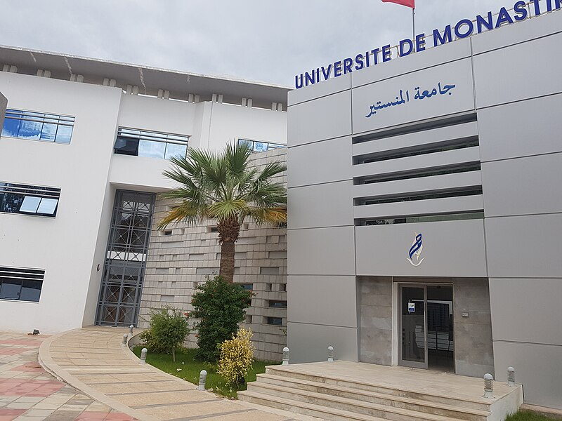

Notre université est crée le 2 septembre 2004 .
Cette Création s'annonce dans le cadre de la réforme que connait le système éducatif universitaire, réforme ayant pour fondement la décentralisation des services et pour objectif l'amélioration de la rentabilité de ce système dans le cadre d'une approche globalisante qui prend en considération les côtés scientifique et académique aussi bien que le côté social . Tout récente qu'est la noble décision de cette création, l'Université de Monastir inclut des établissements universitaires repartis entre les gouvernorats de Monastir et de Mahdia, établissements dont certains sont bien enracinés et qui ont contribué généreusement dans l'innovation de la Tunisie moderne.
